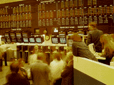

The Winnipeg Commodity Exchange markets
all types of Saskatchewan grains and oil seeds It was formed by
local grain merchants and farmers in 1887.
When grain production began in the West,
it was limited to a small area at the eastern edge of the prairies.
Wheat was grown in small amounts and sales were limited to the
local community. This changed in 1876 when the first small shipment
of western wheat was shipped down the Red River through the United
States and into Ontario. In 1883 the railway between Winnipeg
and the Lakehead made it possible to move grain by an all Canadian
route.
As grain production and export increased,
the Canadian grain industry, its producers and grain companies
were faced with many problems including:
- no process in place for setting the
price of grain before it reached the market;
- marketing of the grain in the fall when
supplies were large;
- inability to supply grain to buyers
throughout the year;
- unknown time of delivery to other countries;
and,
- unknown quantity of grain available.
The short term surplus of grain in the
fall and uncertainty about quantities and sales caused the price
of grain to drop at a time when the most sales were made. As a
result, producers and grain merchants formed the Winnipeg Commodity
Exchange.
Today, the Winnipeg Commodity Exchange
offers two types of markets.
- a cash market
- a futures market
Initially, only cash grain transactions
were carried out at the Exchange. These transactions still take
place and involve grain that is already harvested and is ready
to be sold.
In 1904 the Exchange expanded to include
a futures market. The futures market is used to provide a means
for producers, handlers and users of grain to protect themselves
against the risk of price changes. This market is used for transactions
involving future predictions of the quantity and quality of grain.
Originally, the Winnipeg Commodity Exchange
was responsible for marketing all types of grain. In 1949 the
Canadian Wheat Board became the sole marketing agency for western
Canadian wheat and barley. But, the Canadian Wheat Board still
uses the Winnipeg Commodity Exchange as part of its marketing
program. The prices set by the Exchange are used as a basis for
prices set on the open market and by the Canadian Wheat Board.
|